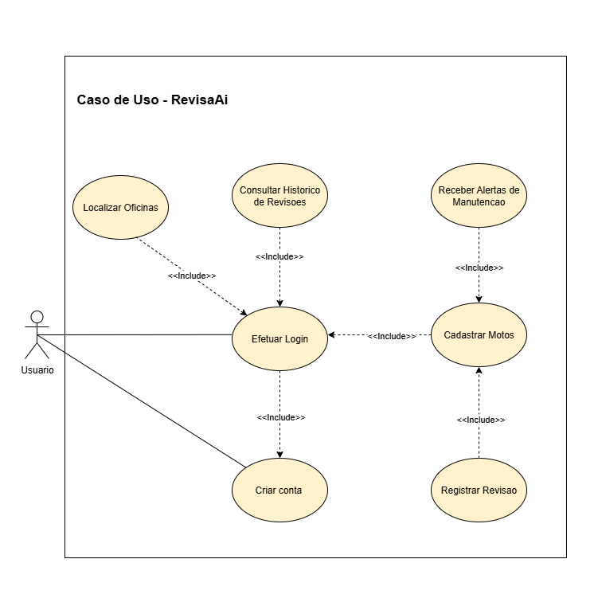
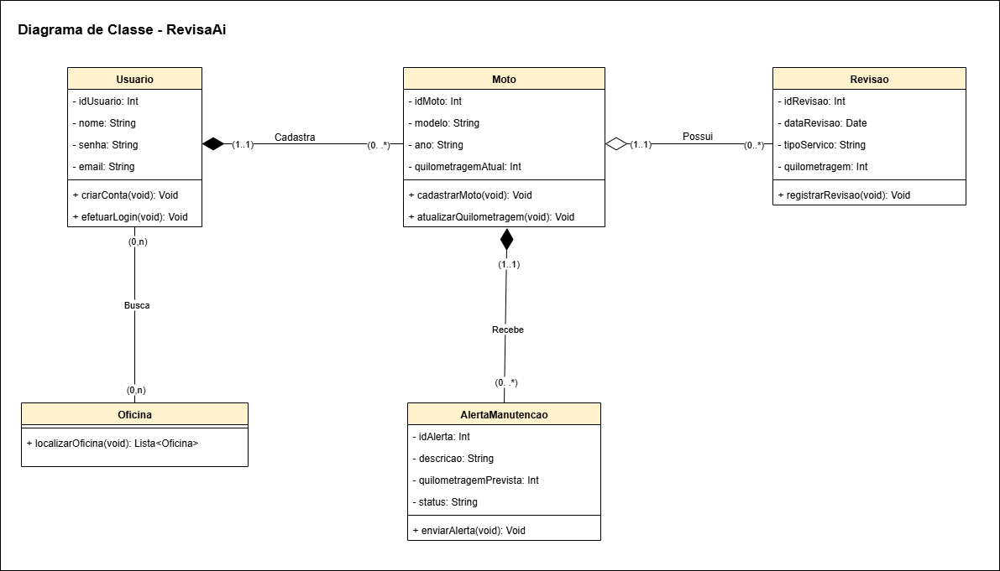

Nome do aplicativo mobile - RevisaAi
Aplicativo mobile
voltado para motociclistas, com foco no gerenciamento de revisões e manutenção da moto. O sistema permite registrar informações sobre quilometragem, trocas de óleo e demais revisões, além de localizar oficinas mecânicas próximas utilizando integração com serviços de mapas.
O objetivo do projeto é desenvolver e manter um aplicativo simples, prático e eficiente que auxilie motociclistas no acompanhamento da manutenção de suas motos, evitando esquecimentos de revisões importantes e garantindo maior segurança e durabilidade do veículo. O app possibilita o registro de dados essenciais sobre a moto, a geração de alertas de revisão e a busca de oficinas. Neste primeiro momento, estará disponível apenas a funcionalidade de busca de oficinas, mas, caso seja viável nesta versão, será implementado também o cadastro de oficinas, permitindo que estabelecimentos se registrem, recebam comentários e avaliações dos usuários, oferecendo assim uma experiência mais completa. Futuramente, o aplicativo incluirá ainda a funcionalidade de monitoramento do consumo de combustível, ampliando os recursos de controle e gestão para os motociclistas.
A motivação central é atender à necessidade dos motociclistas que frequentemente enfrentam dificuldades em organizar e acompanhar as manutenções periódicas de suas motos, o que pode resultar em problemas mecânicos, aumento de custos e riscos à segurança. O RevisaAi surge como uma solução tecnológica acessível, intuitiva e centrada no usuário, oferecendo praticidade no dia a dia e contribuindo para a preservação da moto. Além disso, o aplicativo acompanha a crescente demanda por ferramentas digitais que auxiliem no gerenciamento de tarefas pessoais de forma rápida, confiável e integrada.
| Nome do Integrante | Papéis | Responsabilidades |
|---|---|---|
| Ennoile Raquel Martins Ferreira | Analista / Gerente de Projeto / QA (Qualidade) | Planejar e organizar as tarefas da equipe (usando métodos ágeis como Scrum ou Kanban); Documentar requisitos, casos de uso e mudanças no escopo do projeto; Realizar testes funcionais e de usabilidade no app. |
| Heloíse Vitória Cruz Brito | Desenvolvedor Mobile (Frontend) | Implementar a interface do usuário (UI) seguindo os wireframes e protótipos; Garantir a responsividade e usabilidade do app em diferentes dispositivos; Integrar o frontend com a API/backend; Corrigir bugs de interface e aprimorar a experiência do usuário (UX). |
| Verissímo Rodrigues Casas | Desenvolvedor Backend / DevOps | Projetar e implementar a API e lógica de negócio do aplicativo; Criar e gerenciar o banco de dados; Garantir a segurança, escalabilidade e performance dos serviços de backend; Implementar autenticação, autorização e controle de acesso. |
O aplicativo RevisaAi será utilizado por dois principais perfis de usuários:
Usuários que possuem e utilizam motocicletas em seu dia a dia, necessitando de auxílio no controle de revisões e manutenção preventiva.
Estabelecimentos que poderão se cadastrar no aplicativo para oferecer serviços de manutenção e reparo de motocicletas. Neste momento, essa funcionalidade será considerada apenas se for viável nesta versão; caso contrário, será implementada em versões futuras.
| ID | Descrição | Prioridade |
|---|---|---|
| RF01 | O sistema deve permitir que o motociclista crie uma conta com dados básicos (nome, e-mail, senha). | Essencial |
| RF02 | O usuário deve poder cadastrar informações sobre sua moto (modelo, ano, quilometragem atual). | Essencial |
| RF03 | O sistema deve permitir o registro de revisões realizadas (troca de óleo, pneus, etc.). | Essencial |
| RF04 | O sistema deve notificar o usuário sobre revisões futuras com base na quilometragem. | Essencial |
| RF05 | O sistema deve permitir consultar oficinas mecânicas próximas via integração com API de mapas. | Importante |
| RF06 | O usuário deve poder visualizar o histórico completo de revisões realizadas na moto. | Importante |
| ID | Descrição | Categoria | Prioridade |
|---|---|---|---|
| RNF01 | A interface deve ser intuitiva e acessível a usuários leigos em tecnologia. | Usabilidade | Essencial |
| RNF02 | O aplicativo deve responder às interações do usuário em até 2 segundos. | Desempenho | Essencial |
| RNF03 | Os dados de login e informações sensíveis devem ser armazenados de forma criptografada. | Segurança | Essencial |
| RNF04 | O sistema deve estar disponível para uso pelo menos 99% do tempo em um período mensal, considerando apenas indisponibilidades não programadas. Períodos de manutenção preventiva, previamente comunicados aos usuários, não serão contabilizados. | Disponibilidade | Essencial |
| RNF05 | O aplicativo deve ser compatível com dispositivos Android, com suporte a partir da versão Android 8.0 (Oreo) ou superior. | Compatibilidade | Importante |
| RNF06 | O sistema deve armazenar todos os dados localmente no dispositivo, permitindo que todas as funcionalidades operem mesmo sem conexão à internet. Quando houver conexão, os dados devem ser sincronizados automaticamente com a nuvem, garantindo consistência, integridade e recuperação completa em caso de perda de dados no dispositivo. | Armazenamento Offline e Nuvem | Essencial |
| ID | Descrição | Prioridade |
|---|---|---|
| RN01 | O sistema deve utilizar valores padrão de referência (ex.: 1.000 km para primeira revisão, 3.000 km para revisões gerais, 1.000–2.000 km para troca de óleo), permitindo que o usuário personalize de acordo com o manual do fabricante da sua moto. | Essencial |
| RN02 | O usuário só pode atualizar a quilometragem da moto para valores superiores à última registrada. | Essencial |
| RN03 | O sistema deve emitir alertas quando a quilometragem atingir os limites configurados para cada tipo de revisão. Os valores padrão serão definidos pelo app, mas poderão ser ajustados pelo usuário. | Essencial |
O escopo futuro contempla funcionalidades que serão implementadas em versões posteriores do aplicativo, ampliando as capacidades do RevisaAi.
| ID | Descrição | Prioridade |
|---|---|---|
| RF07 | O usuário poderá registrar cada abastecimento, informando quilometragem, quantidade de combustível e valor pago. | Essencial |
| RF08 | O sistema deve calcular automaticamente o consumo médio (km/L) com base nos abastecimentos cadastrados. | Essencial |
| RF09 | O sistema deve disponibilizar relatórios e gráficos sobre consumo de combustível, custo por km e eficiência média. | Importante |
| RF10 | O sistema deve alertar o usuário quando o consumo estiver abaixo da média registrada, sugerindo uma revisão. | Desejável |
| RF11 | Oficinas devem poder se cadastrar informando CNPJ, endereço, telefone e horário de funcionamento. | Desejável |
| RF12 | O sistema deve permitir que usuários avaliem e comentem sobre oficinas cadastradas. | Desejável |
| ID | Descrição | Categoria | Prioridade |
|---|---|---|---|
| RNF07 | O sistema deve apresentar gráficos de consumo de forma clara e responsiva, acessível em dispositivos móveis. | Usabilidade | Desejável |
| RNF08 | Os registros de consumo devem ser armazenados de forma segura no banco de dados em nuvem. | Segurança / Dados | Essencial |
| RNF09 | O usuário poderá registrar abastecimentos mesmo sem internet; os dados serão sincronizados posteriormente. | Confiabilidade | Essencial |
| RNF10 | O sistema deve suportar grande volume de registros de abastecimento sem perda de desempenho. | Performance | Importante |
| ID | Descrição | Prioridade |
|---|---|---|
| RN04 | Usuários poderão avaliar oficinas somente após registrarem pelo menos uma revisão associada a essa oficina no aplicativo. | Desejável |
| RN05 | Somente oficinas com CNPJ válido poderão se registrar no sistema. | Importante |
| RN06 | Para calcular o consumo, o usuário deve informar obrigatoriamente quilometragem atual, litros abastecidos e valor pago. | Essencial |
| RN07 | O consumo médio será calculado dividindo a quilometragem percorrida pela quantidade de combustível abastecida (km/L). | Essencial |
| RN08 | O sistema deve validar que a quilometragem informada em novos abastecimentos seja sempre superior à última registrada. | Essencial |
| RN09 | O sistema deve comparar automaticamente o consumo atual com a média histórica para identificar possíveis problemas mecânicos. | Importante |
| RN10 | O usuário poderá gerar relatórios de consumo em períodos configuráveis (semanal, mensal, personalizado). | Importante |
O diagrama de casos de uso apresenta as principais funcionalidades do sistema RevisaAi e a forma como o usuário interage com elas. Ele descreve as ações que o usuário pode realizar, como criar conta, efetuar login, cadastrar motos, registrar revisões e consultar histórico. Além disso, mostra dependências entre os casos de uso, como a necessidade de efetuar login para acessar determinadas funções e cadastrar uma moto para receber alertas de manutenção.
Diagrama de Caso de uso

O diagrama de classes representa a estrutura estática do sistema, detalhando as entidades envolvidas e seus relacionamentos. As classes principais são Usuário, Moto, Revisão, Oficina e AlertaManutenção, cada uma com seus atributos e operações. Ele evidencia como um usuário pode cadastrar motos, registrar revisões, localizar oficinas e receber alertas de manutenção com base na quilometragem prevista. Esse modelo orienta a implementação, fornecendo uma visão clara das responsabilidades de cada classe.
Diagrama de Classe 